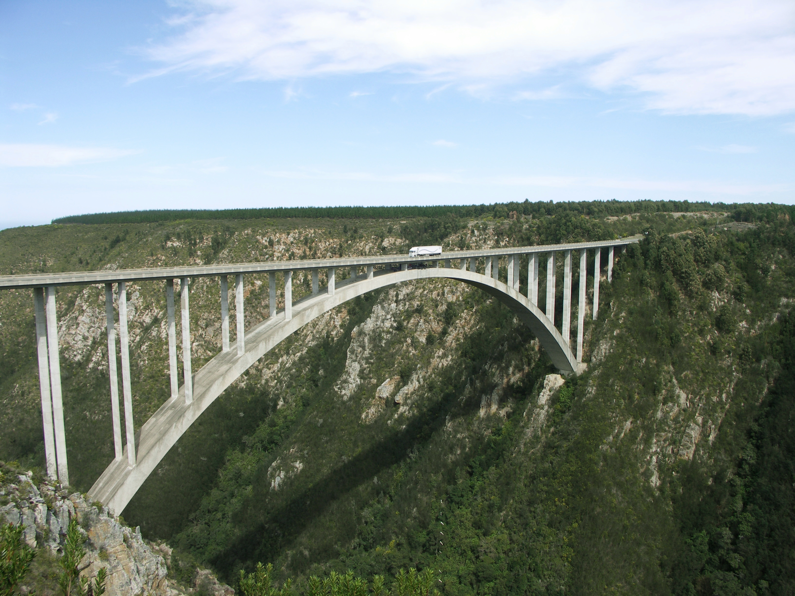
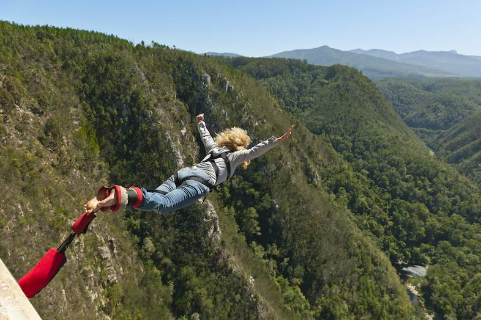
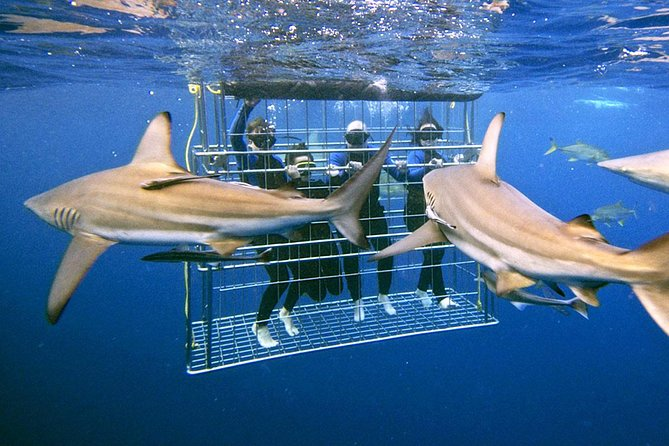
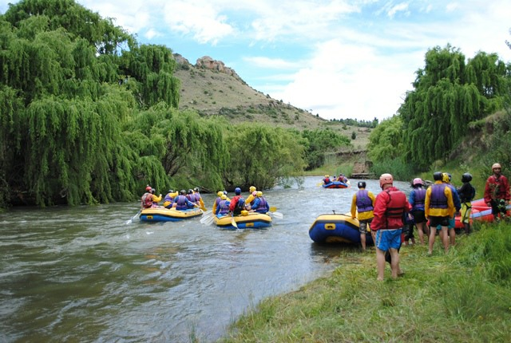
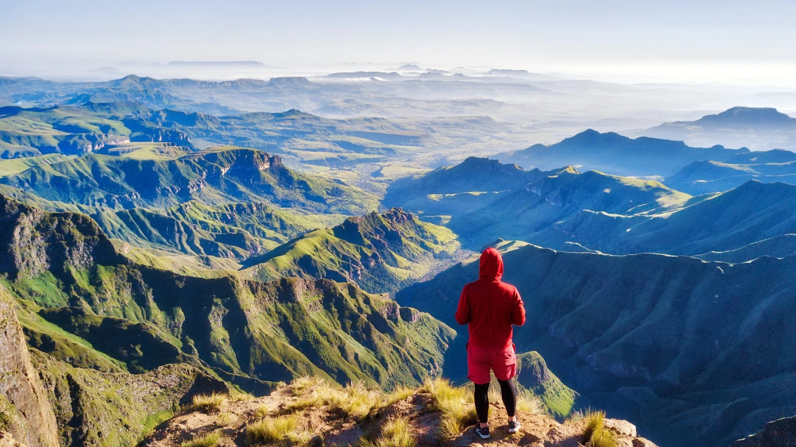

Outdoor Adventures
South Africa is a playground for thrill-seekers. Hike the majestic Drakensberg Mountains, jump from the Bloukrans Bridge on one of the world’s highest bungee jumps, or go shark cage diving along the coast for an adrenaline rush.
White-water rafting, paragliding, and zip-lining are just a few of the outdoor activities available. Adventure tourism combines breathtaking scenery with heart-pumping experiences, making South Africa a must-visit for active travelers.